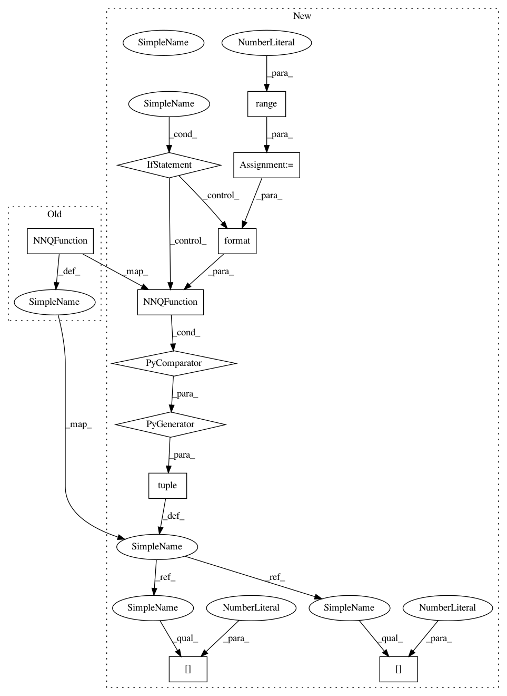

7856d22b09561e33522bdc0bd00218ae75b84bd7,examples/multigoal_sac.py,,run,#Any#,15
Before Change
action_shape=env.action_space.shape,
hidden_layer_sizes=[M, M],
name="qf1")
qf2 = NNQFunction(
observation_shape=env.observation_space.shape,
action_shape=env.action_space.shape,
hidden_layer_sizes=[M, M],
name="qf2")
vf = NNVFunction(
observation_shape=env.observation_space.shape,
hidden_layer_sizes=[M, M])
After Change
M = 128
q_functions = tuple(
NNQFunction(
observation_shape=env.observation_space.shape,
action_shape=env.action_space.shape,
hidden_layer_sizes=(M, M),
name="qf{}".format(i))
for i in range(2))
vf = NNVFunction(
observation_shape=env.observation_space.shape,
hidden_layer_sizes=[M, M])
if variant["policy_type"] == "gmm":
policy = GMMPolicy(
observation_shape=env.observation_space.shape,
action_shape=env.action_space.shape,
K=4,
hidden_layer_sizes=[M, M],
qf=q_functions[0],
reg=0.001
)
elif variant["policy_type"] == "lsp":
bijector_config = {
"scale_regularization": 0.0,
"num_coupling_layers": 2,
"translation_hidden_sizes": (M,),
"scale_hidden_sizes": (M,),
}
policy = LatentSpacePolicy(
observation_shape=env.observation_space.shape,
action_shape=env.action_space.shape,
mode="train",
squash=True,
bijector_config=bijector_config,
observations_preprocessor=None,
q_function=q_functions[0]
)
plotter = QFPolicyPlotter(
qf=q_functions[0],
In pattern: SUPERPATTERN
Frequency: 4
Non-data size: 11
Instances
Project Name: rail-berkeley/softlearning
Commit Name: 7856d22b09561e33522bdc0bd00218ae75b84bd7
Time: 2018-09-09
Author: kristian.hartikainen@gmail.com
File Name: examples/multigoal_sac.py
Class Name:
Method Name: run
Project Name: rail-berkeley/softlearning
Commit Name: 7856d22b09561e33522bdc0bd00218ae75b84bd7
Time: 2018-09-09
Author: kristian.hartikainen@gmail.com
File Name: examples/mujoco_all_sac.py
Class Name:
Method Name: run_experiment
Project Name: rail-berkeley/softlearning
Commit Name: 7856d22b09561e33522bdc0bd00218ae75b84bd7
Time: 2018-09-09
Author: kristian.hartikainen@gmail.com
File Name: examples/mujoco_all_ray.py
Class Name:
Method Name: run_experiment
Project Name: rail-berkeley/softlearning
Commit Name: 7856d22b09561e33522bdc0bd00218ae75b84bd7
Time: 2018-09-09
Author: kristian.hartikainen@gmail.com
File Name: examples/multigoal_ray.py
Class Name:
Method Name: run
Project Name: rail-berkeley/softlearning
Commit Name: 7856d22b09561e33522bdc0bd00218ae75b84bd7
Time: 2018-09-09
Author: kristian.hartikainen@gmail.com
File Name: examples/multigoal_sac.py
Class Name:
Method Name: run